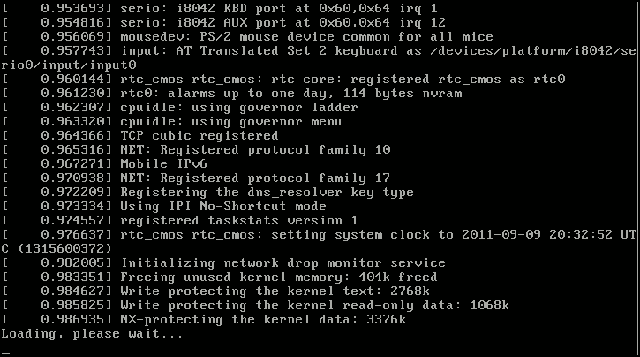
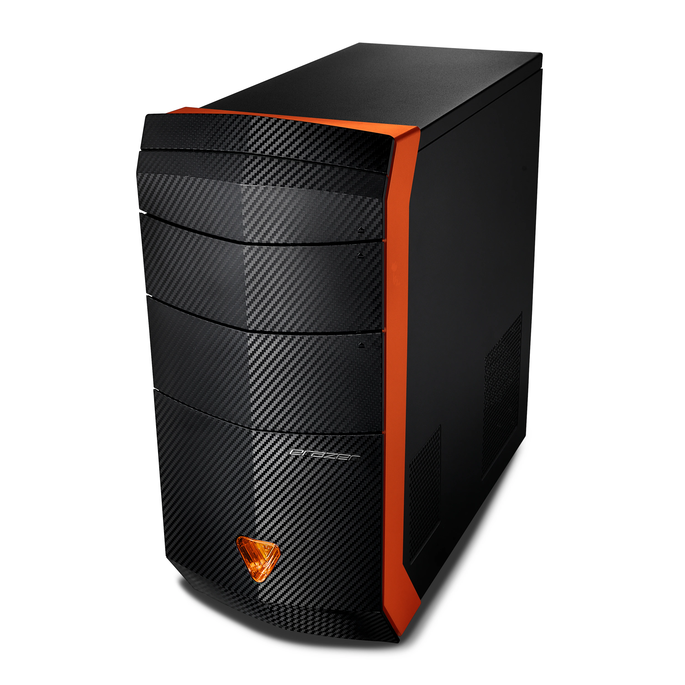

Das arbeiten mit PCs mach mir unfassbar viel Spaß. Vorallem im Bereich
unabhängige Linux Server

(Klassische Linux-Konsole nach Boot)
Dafür habe ich natürlich eigene Hardware. Ich nutze meinen alten PC, da er nicht mehr benutzt wird
 Die Hardware besteht im allgemeinen aus einem i7-7700K und 16GB DDR4 RAM
Ich kann dank dem SSH
Protokoll und einer kompatiblen Software so die Hardware für Proxy verbindungen nutzen